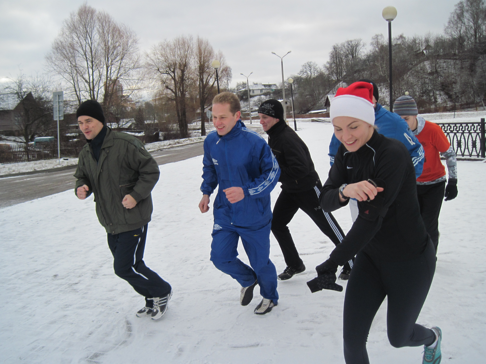
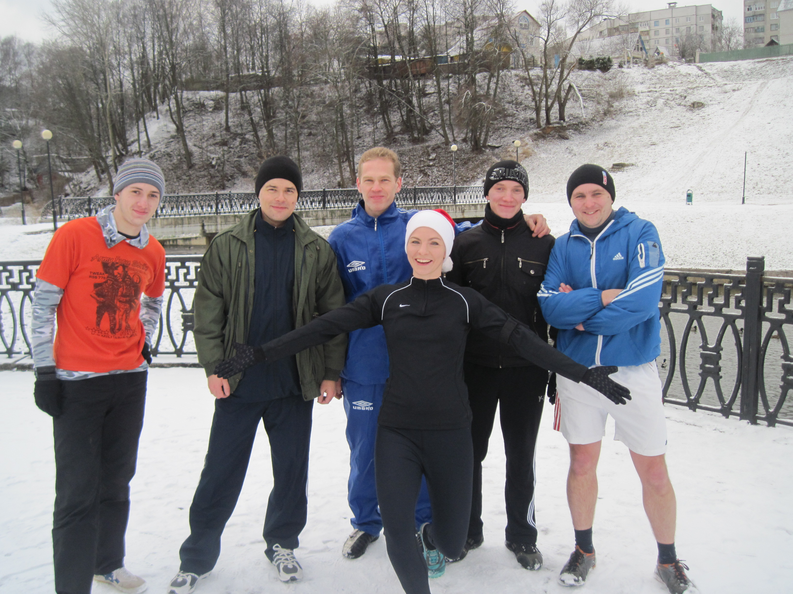
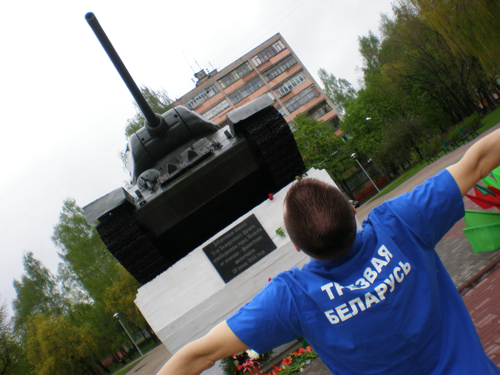
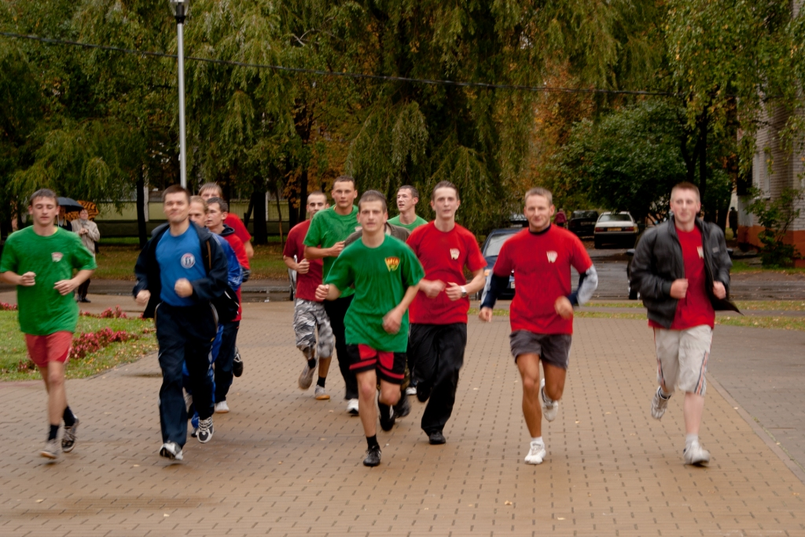
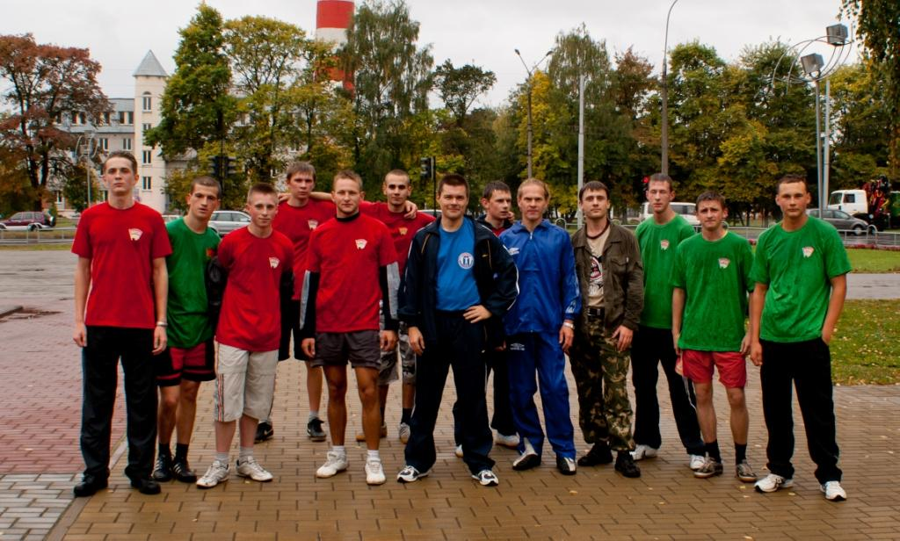

В сотрудничестве с любителями бега г.Могилева и группой Вконтакте «Здоровый Могилев» были организованы серия легкоатлетических пробежек в поддержку трезвого здорового образа жизни. Пробежки проводились в любую погоду, начиная с 2011 года. В них также принимали участие представители БРСМ ВУЗов г.Могилева.





Могилевские трезвенники приняли участие в Епархиальной конференции «В трезвости счастье народа» которая состоялась в 2012 году в г.Витебске. Конференция была организована при поддержке Витебского горисполкома, в ней приняли участие ведущие православные ученые-трезвенники - диакон Иоанн Клименко, ответственный секретарь Иоанно-Предтеченского братства «Трезвение» Русской Православной Церкви, кандидат богословских наук, кандидат хим. наук привел Богословское обоснование трезвенной работы церкви. Протоиерей Илия Шугаев, член Правления Иоанно-Предтеченского братства «Трезвение» Русской Православной Церкви, кандидат пед. наук рассказал о практической трезвенной работе с различными возрастными группами подростков. Могилевская группа трезвенников представила доклад о работе с госструктурами по противодействию алкоголизации населения Могилевской области.
Нашими активистами в г.Могилеве проводятся регулярные встречи с молодежью и беседы на темы нравственного воспитания, трезвого здорового образа жизни. Данные мероприятия проводятся в рамках постоянно действующего под эгидой Могилевской епархии киноклуба Международного фестиваля православного кино «Золотой Витязь»
В декабре 2012 года по инициативе Могилевских трезвенников был реализован общереспубликанский проект «Общее дело Беларуси». В рамках проекта одновременно из пяти регионов Беларуси были отправлены письма на имя премьер-министра и депутатам Парламента (копии - в республиканские СМИ) с предложениями по преодолению алкогольно-табачной эпидемии в Республике Беларусь. В результате проекта люди объединились общей идеей отрезвления нашего общества. Кроме того, МВД Беларуси полностью встало на нашу сторону в вопросах ограничения продажи алкоголя и увеличения его цены. Мы не только оказали давление на законодательную и исполнительную власть, но и нашли новых единомышленников в нашем регионе. Этому также способствовала сеть Вконтакте, где общается много молодежи.
Министерством здравоохранения Республики Беларусь подготовлен и вынесен на общественное обсуждение проект Закона Республики Беларусь "О защите здоровья населения от последствий потребления табака и воздействия окружающего табачного дыма", и Могилевские трезвенники приняли участие в его обсуждении на [официальном сайте Минздрава] (http://minzdrav.gov.by/ru/static/Lets_discuss).
Могилевский клуб «Трезвенность-Оптималист» с 2003 года входит в состав Координационного совета общественных организаций и политических партий г.Могилева при Могилевском горисполкоме.